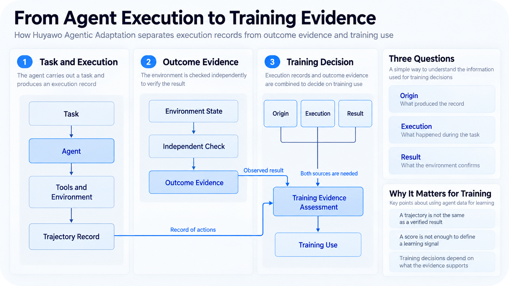

Why execution records and outcome verification matter for training models capable of using tools and acting in environments.
Artificial intelligence agents are taking on tasks that require more than producing an answer. They can interact with environments and make decisions over multiple steps. As these capabilities advance, it becomes increasingly important to understand not only whether an agent completed a task, but also what the available evidence allows us to conclude about its execution.
Traditionally, many language model evaluations focused on the response produced from an input. The model received a question, generated an answer, and its performance was assessed by comparing that answer with an expected result. In systems that use tools, this approach is insufficient. The final response may represent only a small part of the work performed, while the outcome depends on what happened during execution.
This distinction also matters for training. An agent's interactions can provide examples of its behavior while solving tasks. However, a trajectory that ends with a declaration of success does not, by itself, demonstrate that the task was completed. Nor does it establish that all recorded actions were performed by the model to which they were attributed.
At Huyawo Agentic Adaptation, we are investigating this relationship between agent experience, execution evidence, and model training. Our interest is in understanding how these experiences can be used to develop agentic capabilities without confusing what a system claimed to have done with what actually happened.
In our view, three questions need to be considered when interpreting a trajectory:
- Provenance: What evidence makes it possible to identify the system responsible for the recorded actions?
- Execution: What happened during the interaction between the agent and the environment?
- Outcome: What observations demonstrate that the task was completed according to the established criteria?
These questions are related, but they are not equivalent. A satisfactory answer to one does not automatically establish the others.
A Trajectory Is Not the Same as an Outcome
A record of an agent's interactions can provide information about the decisions made during a task. It may include the system's actions and the environment's responses. These elements help us understand how the agent arrived at its answer and make it possible to investigate behaviors that would not be observable from the final output alone.
Consider an agent tasked with fixing an issue in a software repository. During execution, it modifies the code and reports that the fix is complete. The interaction record may show how the change was made and what results the tools returned.
However, the presence of this information does not necessarily establish that the issue was resolved.
The agent may have run only some of the necessary tests. The change may satisfy a specific condition without correcting the requested behavior. It is also possible that the success message was produced without corresponding confirmation from the environment.
To evaluate the outcome, we need to examine the state of the repository after execution and determine whether the change meets the task's criteria. Depending on the issue, this may require an additional check that does not rely exclusively on the agent's account.
This distinction guides how we approach evaluation at Huyawo Agentic Adaptation. A system may claim to have completed an operation while the state of the environment shows that it did not occur. Evaluating the messages produced during an execution and evaluating their consequences are therefore different activities.
The integrity of records introduces another question. A file may have a hash that makes it possible to detect subsequent changes to its contents. This is useful for determining whether the data being examined remains identical to the data previously recorded. However, the hash does not demonstrate that the events described in the file actually occurred.
A fabricated record can also have a valid hash.
Establishing provenance requires additional information about how the data was produced and who had control over it. When this information is unavailable, the record may still be useful for certain analyses, but the conclusions must respect that limitation.
The same principle applies to verifiers. A program that receives a success claim and confirms that it matches an expected value is not necessarily equivalent to a program that observes the environment and verifies the task's outcome. The difference depends on the information used in verification and who controls that information.
To interpret an execution, then, it is important to distinguish recorded behavior from its consequences and understand what evidence connects both to the system being evaluated.
Identifying Problems That Can Change the Meaning of an Execution
As agents begin using tools and environments, more opportunities arise for a task to receive a positive evaluation without the intended behavior having occurred. This does not mean that execution records are inadequate. It means that interpreting them requires considering the conditions under which they were produced.
Several situations deserve particular attention.
Claims of Success
An agent may report that it completed a task without the state of the environment confirming that claim. The final message may be useful for understanding the system's intention, but it should not replace observation of the outcome when the task allows such verification.
Evaluation Shortcuts
An agent may find a way to satisfy the scoring mechanism without performing the intended work. This behavior, often called reward hacking, can occur when the criterion used to recognize success permits paths that do not correspond to the task's objective.
For example, an agent may modify a test instead of fixing the code that the test was supposed to check. If the evaluation considers only the result of that test, the execution may receive a positive score without demonstrating the capability it was intended to measure.
Answer Exposure
When a task has a reference answer, it is important to verify whether that information was accessible during execution. If the agent can consult the expected solution, its performance may reflect access to the answer rather than its ability to solve the problem.
This risk also arises when examples previously used in training are similar to the evaluation tasks.
Environment Problems
An evaluation may fail because the environment does not provide the conditions necessary to execute the task. In such cases, a negative outcome does not necessarily demonstrate a limitation of the model.
Likewise, changes in execution conditions can alter the outcome even when the model remains the same.
Provenance of Demonstrations
A trajectory attributed to a particular model may have been produced by another system or a human operator. Such demonstrations may have legitimate uses in training, provided their provenance is correctly identified.
The problem arises when a demonstration is used to support a claim that its records cannot substantiate.
These situations show why a score alone may be insufficient to characterize an agent's behavior. The outcome must be interpreted in light of the execution conditions and the method used to determine success.
This is why an evaluation must clearly establish both the capability being examined and the evidence supporting the outcome. Without this distinction, a score may be interpreted as demonstrating a capability that the execution did not actually prove. Evaluation conditions can significantly change the conclusions drawn about a system's performance.
For agentic systems, this concern extends to experiences that may later be used for training.
What Changes When Trajectories Are Used to Train Models?
During evaluation, an incorrect interpretation can produce a misleading estimate of a system's capabilities. During training, the same problem can influence the behavior a model learns to produce.
In supervised fine-tuning, a trajectory can be transformed into examples that associate a task's context with the actions expected of the model. Training uses these examples to adjust the probability distribution over the tokens produced by the model.
However, the loss function does not determine whether a demonstration represents a successful execution. It measures the correspondence between the model's predictions and the targets provided during training.
This means that a pipeline can process its examples correctly and still receive demonstrations that do not correspond to the desired behavior.
Consider again an agent that modifies code. If a trajectory is classified as successful only because its final message states that the tests passed, it may be selected as a positive demonstration even when the task remained incomplete. Training may then reinforce actions associated with that example without sufficient evidence of their effectiveness.
In reinforcement learning methods, the issue appears differently. The reward signal guides the optimization of behavior. If that signal can be obtained through paths that do not satisfy the task's objective, the model may learn to exploit those conditions.
The quality of evaluation thus directly influences the quality of the training signal.
This does not mean that only successful trajectories can contribute to learning. Unsuccessful experiences can also provide useful information. The question is to determine the role of each experience and prevent an incorrect classification from changing the training objective.
The decision to use a trajectory therefore depends on more than its format or score.
We need to understand the provenance of the experience and determine whether it provides an appropriate basis for the learning objective.
It is also important to distinguish evidence about a specific execution from claims about a model's general capabilities. Completing a task demonstrates behavior observed in that situation. To claim that the model has acquired a capability that extends to other tasks, additional evaluations are needed.
This distinction is especially important when the goal of training is to improve performance in environments where the agent must make decisions over multiple steps.
How We Are Approaching This at Huyawo Agentic Adaptation
Huyawo Agentic Adaptation is a Huyawo research and engineering project dedicated to adapting language models for tasks involving interaction with environments.
One of the questions guiding our work is how to turn agent experiences into useful information for training without losing the ability to examine what happened during their execution.
This involves studying the relationship between trajectories and the outcomes attributed to them. It also involves understanding which conclusions can be supported by the available data and which depend on additional observations.
Our starting point is that evaluation should not be treated merely as a stage that follows training.
When an experience is going to be used to teach a particular behavior, the criteria defining its success need to be part of the decision to select it in the first place. Otherwise, training may receive signals whose relationship to the desired capability has not been established.
This concern guides our investigation into trajectory provenance and verification of the outcomes achieved by agents.

There is a difference between building a system capable of storing executions and building a process in which the outcomes of those executions can inform training decisions. The former makes it possible to preserve information about what happened. The latter requires determining what that information means and the limits of the conclusions we can draw from it.
In our approach, several kinds of information are especially important:
- The task: What the agent was asked to do and what conditions determine its completion.
- The system: What conditions influenced execution.
- The experience: What happened during interaction with the environment.
- The verification: What evidence supports the outcome assigned to the execution.
- The training: How the experience will be used to guide the model's learning.
This information helps distinguish different types of claims.
We can, for example, confirm that a particular sequence of tokens was processed correctly by a training pipeline without claiming that it represents a task completed by an agent. We can also observe that a task was solved in a particular environment without concluding that the same behavior will occur in different environments.
Each of these findings has value in its own right.
The goal is to ensure that training and evaluation decisions take into account what the evidence actually demonstrates.
What This Means for Research on Agentic Training
The development of agents is expanding the range of experiences that can be used to adapt language models. Rather than relying only on question-and-answer pairs, researchers can study model behavior during task execution.
These possibilities also make it more important to understand how examples are produced and evaluated.
A trajectory may contain information about an agent's ability to handle a particular task. However, identifying the behaviors that contributed to its completion requires observing more than the final response.
Likewise, a set of demonstrations with positive evaluations does not automatically establish that training on them will produce improvements on unseen tasks. That conclusion depends on experiments examining the model's behavior after adaptation.
In our view, research in this area should seek to answer several questions:
- How can we distinguish an action that was actually executed from one that was merely claimed?
- How can we verify that task success corresponds to the intended outcome?
- How can we determine whether a trajectory provides information suitable for training?
- How can we identify the environment's influence on observed behavior?
- How can we evaluate whether capabilities acquired during adaptation extend to tasks that were not part of training?
Answering these questions can help researchers better understand the relationship between the experiences provided to models and the behaviors they learn.
It can also make experimental results easier to interpret. When we know the conditions that produced a particular experience and understand how its outcome was verified, we can investigate more precisely why a training strategy works on some tasks and not others.
Not every execution needs to provide evidence for every kind of conclusion. What matters is identifying what can be claimed on its basis.
This principle makes it possible to use different data sources without assigning all of them the same meaning.
As models begin operating in more complex environments, the distinction between recording an action, observing its consequences, and using that experience for training becomes an important part of research.
That is one of the problems we are focusing on in the development of Huyawo Agentic Adaptation.
Our interest lies not only in using trajectories to adapt models, but also in understanding what information those trajectories actually provide about the behavior we want to develop.
After all, when an agent completes a task, the most important question is not merely whether the system recorded a success.
It is what we can demonstrate about that success and what we can learn from it.